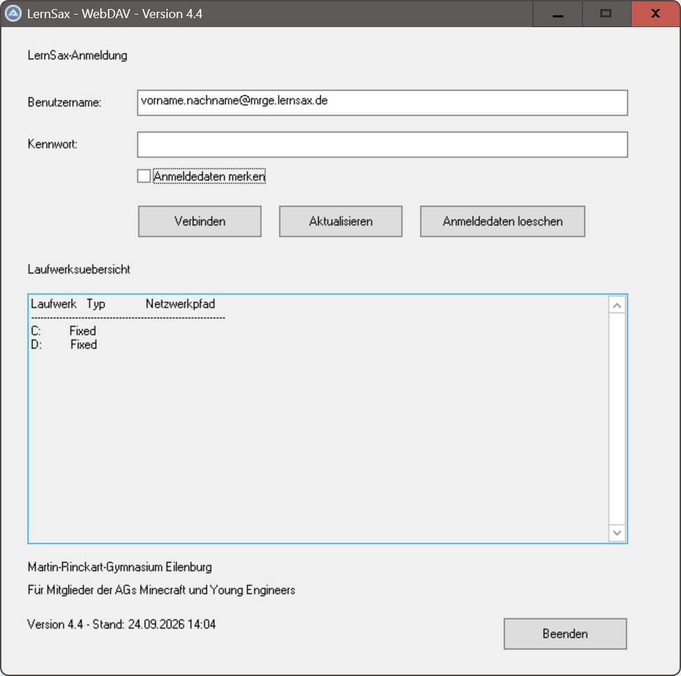
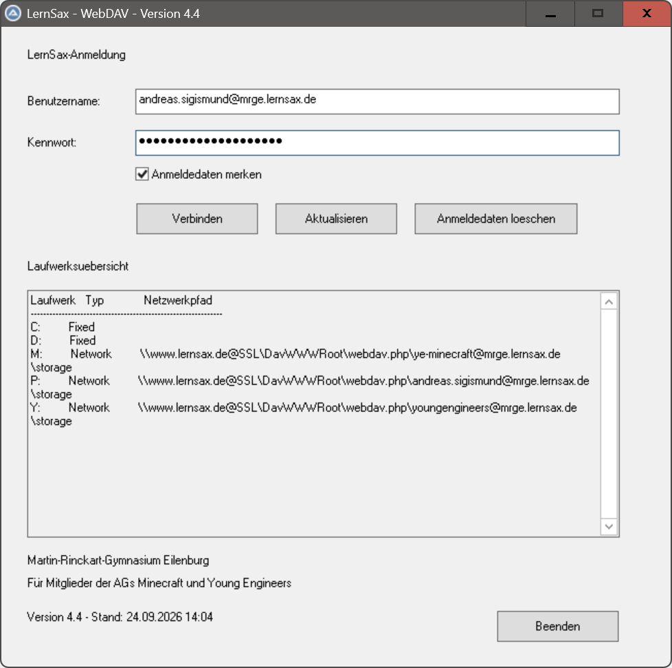

Einleitung
Dieses Programm lernsax-anmelden stellt nach der Anmeldung eine Verbindung zu LernSax her
und bindet ausgewählte Bereiche als Laufwerke in Windows ein.
In der Programmversion für die Mitglieder der AGs Minecraft und Young Engineers
werden folgende LernSax-Bereiche eingebunden:
- der persönliche
storage-Ordner des angemeldeten Nutzers - der gemeinsame
storage-Ordner der Gruppe Young Engineers - der gemeinsame
storage-Ordner der Minecraft-Gruppe
Dadurch können andere Programme direkt auf die dort gespeicherten Dateien zugreifen.
Nach der Nutzung des Programms sollten die verbundenen Laufwerke wieder getrennt werden, um die Sicherheit der Daten zu gewährleisten.
Das Trennen kann auf folgende Weise erfolgen:
- das Programm erneut aufrufen
- den Datei-Explorer öffnen und die verbundenen Laufwerke trennen
- Windows neu starten oder herunterfahren
- den Windows-Befehl
net use * /deletefür alle Laufwerke ausführen - den Windows-Befehl
net use P: /deletefür das Laufwerk P: ausführen
Programmoberfläche

Warten für Vollbild
Warten für VollbildDokumentation
Ausführliche Programmbeschreibung des AutoIt-Programms
Quelltext lernsax-anmelden.au3 des AutoIt-Programms
Das Programm kann modifiziert werden, um den individuellen Bedürfnissen der Nutzer gerecht zu werden.
Bei Änderungen muss auf die Herkunft des Programms verwiesen werden: AG Young Engineers, Martin-Rinckart-Gymnasium Eilenburg.